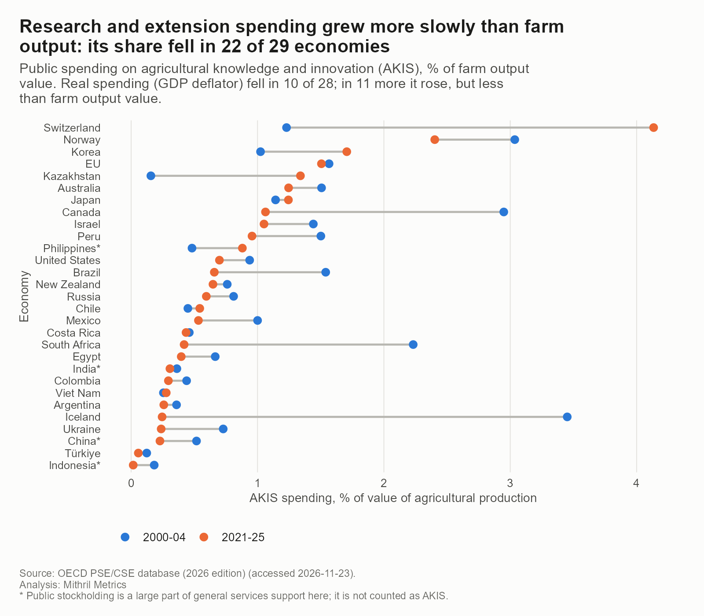
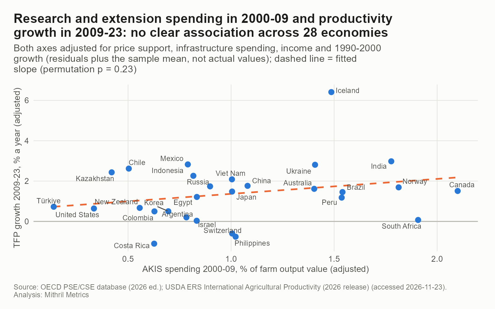

Short answer. Public spending on agricultural research, extension and education has grown more slowly than farm output: its share of output value fell in 22 of 29 economies between 2000-04 and 2021-25, although in real terms it fell in only 10 of 28. Returning each economy to its 2000-04 share would cost about USD 12.7 bn a year (USD 6.8 bn without China), a median of 6% of what governments spend on budgetary support to agriculture. Across 28 economies, higher spending in the 2000s shows no clear association with productivity growth in 2009-23; the positive point estimate depends mainly on Iceland.
Why this matters now
The OECD’s Agricultural Policy Monitoring and Evaluation 2026, released on 2 November, finds that government support to agriculture has risen to a record level while spending on general services, which includes research, extension and infrastructure, has fallen relative to the size of the sector, and agricultural productivity growth has slowed. It recommends shifting support toward knowledge and innovation. We ask three questions with the OECD’s own data: has public spending on agricultural knowledge and innovation kept pace with farm output, what would catching up cost, and did economies that spent more in the 2000s see faster productivity growth afterwards? Primary source.
What we did
We take public spending on the agricultural knowledge and innovation system (AKIS: research, extension and education) from the OECD support database for 29 economies, the EU counted as one, and express it as a share of the value of farm output. We compare 2000-04 with 2021-25 and cost the gap. We then compare economies: spending in 2000-09 against growth in total factor productivity (TFP, output per unit of all inputs, from USDA) in 2009-23, holding price support, infrastructure spending, income and past growth fixed. With 28 economies, we test the result by reshuffling the data 9,999 times rather than relying on textbook formulas.
What the data show
Spending has grown more slowly than farm output

The share of farm output value that governments spend on research, extension and education fell in 22 of 29 economies, from a median of 0.81% in 2000-04 to 0.59% in 2021-25. This is mostly slower growth, not cuts: in real terms spending fell in 10 of 28 economies and rose more slowly than output value in 11 more. Some national series change level abruptly, but among the 13 economies whose series show no jump, the share still fell in 10. Our total for general services, 2.45% of output value in 2023-25, matches the OECD’s figure.
Catching up would cost about USD 12.7 bn a year
Returning each economy to its own 2000-04 share would take about USD 12.7 bn a year, on top of the USD 26.1 bn spent in 2023-25. China accounts for USD 5.9 bn of it. Measured against what each government already spends, the gap is a median 6% of budgetary support to agriculture and 16% of general services. Against market price support it is a median 4%, but half or more in Brazil, Canada and South Africa. Canada’s figure depends partly on a one-year spike in 2003; without it, the gap falls from 68% to 53% of its price support.
No clear link with later productivity growth

Economies that spent more on research and extension in 2000-09 did not show clearly faster productivity growth in 2009-23. The estimate is positive, 0.56 points of annual growth for one standard deviation more spending, but the 95% range runs from -0.63 to 2.11 points per point of spending (p = 0.23). It depends mainly on Iceland, whose measured productivity growth is far above every other economy’s; without Iceland the coefficient falls from 0.74 to 0.29. Returns to research build up over decades, so 15 years of cross-country data are a weak test either way.
What this means for policy
- If the aim is to keep public research and extension in step with the sector, returning each economy to its 2000-04 share would take about USD 12.7 bn a year (USD 6.8 bn without China), a median 16% of current general services spending. In 3 economies (Brazil, South Africa and Iceland) it would exceed their whole general services budget; research and extension systems cannot absorb that quickly, so the trade-off is speed against how well the money is spent.
- If the aim is to fund it by moving away from market price support, as the OECD recommends, the gap is a median 4% of each economy’s price support, but half or more in 3 economies (Brazil, Canada and South Africa). Price support is paid mostly by consumers through higher prices and research by taxpayers, so a shift moves the cost from one group to the other rather than freeing an existing budget line.
- If the aim is to justify more spending by faster productivity growth, these cross-country data neither confirm nor rule out such gains over 15 years. The case rests on longer series and country studies of returns to research, which this comparison does not replace.
Caveats
- Ratios move with farm output value. The share fell mainly because output value grew faster than spending, partly with the 2022-23 price spike; real spending fell in only 10 of 28 economies.
- No evidence of an effect, but no evidence against one either. The 95% range (-0.63 to 2.11 points of growth per point of spending) fits zero and very large returns alike. Theory links productivity to accumulated research, and a high spending share in 2000-09 can also reflect a weak farm sector that later recovered.
- One economy drives the estimate. Iceland’s measured productivity growth is far above every other economy’s; without it the coefficient falls from 0.74 to 0.29.
- Some series change level abruptly. Iceland (2007), Switzerland (2006) and Kazakhstan (2014) show step changes in the research share of general services that OECD notes do not explain; for Switzerland the OECD reports a large real increase. Among the 13 economies whose series show no jump at all, the share still fell in 10.
- The cost is a yardstick, not a target. It scales with today’s farm output value, which was unusually high in 2022-23, and it adds up national gaps that are decided country by country.
Data & code
- OECD Producer and Consumer Support Estimates (PSE/CSE) database (SDMX agency OECD.TAD.ARP; DSD_AGR_POLIND@DF_TSE, DF_GSSE, DF_COMGSSE, DF_COMM, DF_PSE), version 2026 edition (Agricultural Policy Monitoring and Evaluation 2026), data to 2025. Link
- USDA ERS International Agricultural Productivity (Machine-readable long-format file of TFP indices and components, 1961-2023 (TFP_Index)), version 1961-2023 release (updated 2026-01-27). Link
- World Bank World Development Indicators (NY.GDP.PCAP.PP.KD (GDP per capita, PPP, constant international $)), version API, accessed date in data_raw/_access_log.csv. Link
Code to reproduce every number and figure: GitHub. Technical note with more detail (PDF, 2-3 pages): brief.pdf.
Use of AI tools. We use Claude, an AI assistant by Anthropic, as a working tool: to help with coding, data retrieval scripts and first drafts of text. Questions, methods, robustness checks and conclusions are our own, every number is reproducible from the published code, and we review all text before it goes online.

Written by Pietro Sala. Views are the authors’ own. Part of Mithril Metrics: short, reproducible analyses of current agri-food, water and climate policy questions.